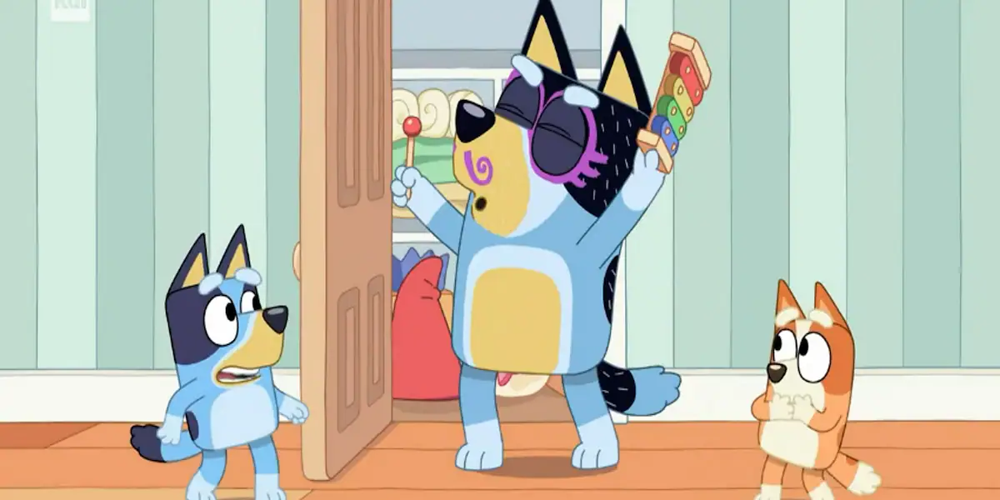

Explora las Temporadas
Cada temporada de Bluey está llena de risas, aprendizaje y momentos familiares inolvidables. Descubre los episodios que han hecho de esta serie un fenómeno mundial.
Temporada 1



Temporada 2


Temporada 3